Front Seat Assembly RH (Power Seat Type) Reassembly |
| 1. Install Front Seat Cushion Shield Lower LH |
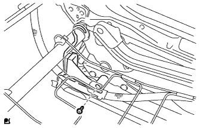 |
Install the front seat cushion shield lower LH with the screw.
| 2. Install Front Seat Cushion Shield Lower RH |
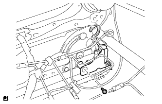 |
Install the front seat cushion shield lower RH with the screw.
| 3. Install Reclining Adjuster Inside Cover LH |
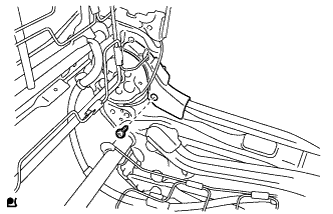 |
Install the reclining adjuster inside cover LH with the screw.
| 4. Install Reclining Adjuster Inside Cover LH |
 |
Insert the guide.
Install the reclining adjuster inside cover LH with the 2 screws.
Install the clamp.
| 5. Install Reclining Adjuster Inside Cover RH |
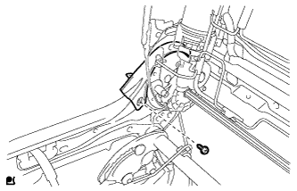 |
Install the reclining adjuster inside cover RH with the screw.
| 6. Install Reclining Adjuster Inside Cover RH |
 |
Insert the guide.
Install the reclining adjuster inside cover RH with the 2 screws.
Install the clamp.
| 7. Install Separate Type Front Seatback Cover RH |
 |
Using hog ring pliers, install the separate type front seatback cover RH with 8 new hog rings.
| 8. Install Separate Type Front Seatback Cover with Pad |
Temporarily install the separate type front seatback cover with pad to the front seat frame & adjuster RH.
 |
Engage the 4 claws to install the 2 front seat headrest supports.
 |
Install the bracket of the separate type front seatback cover RH with the nut.
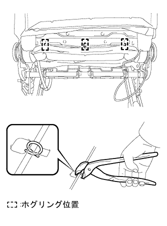 |
Using hog ring pliers, install 3 new hog rings.
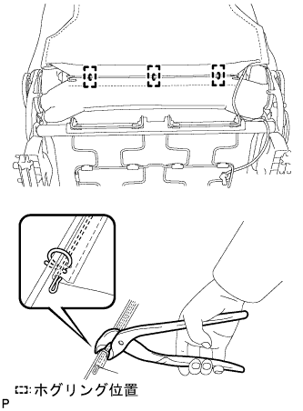 |
Using hog ring pliers, install the separate type front seatback cover with pad with 3 new hog rings.
| 9. Install Separate Type Front Seat Cushion Cover RH |
 |
Using hog ring pliers, install the separate type front seat cushion cover RH with 12 new hog rings.
| 10. Install Separate Type Front Seat Cushion Cover with Pad |
Temporarily install the separate type front seat cushion cover with pad to the front seat frame & adjuster RH.
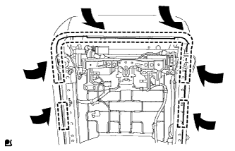 |
Attach each J-hook.
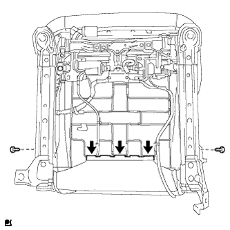 |
Install the separate type front seat cushion cover with pad with the 3 J-hooks and 2 clips.
| 11. Install Front Power Seat Switch RH |
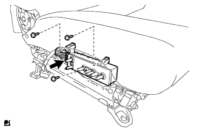 |
Install the front power seat switch RH with the 3 screws.
Connect the connector.
| 12. Install Front Seat Cushion Shield Inner RH |
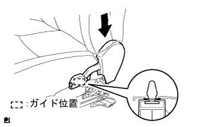 |
Slide the front seat cushion shield inner RH in from the direction of the arrow in the illustration, and insert the guide into the clip.
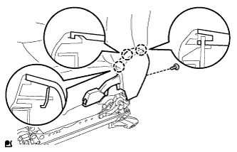 |
Engage the 3 claws and install the front seat cushion shield inner RH with the screw.
| 13. Install Front Seat Inner Belt Assembly RH |
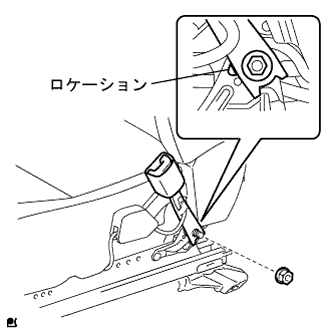 |
Install the front seat inner belt assembly RH with the nut.
Engage each clamp and connect the connector.
| 14. Install Front Seat Cushion Shield Inner NO.1 RH |
Engage the 3 claws.
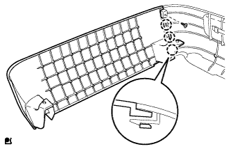 |
Install the front seat cushion shield inner NO.1 RH to the front seat cushion shield RH with the screw.
| 15. Install Front Seat Cushion Shield RH |
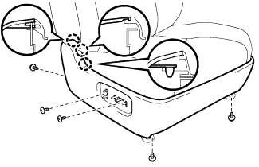 |
Engage the 3 claws.
Install the front seat cushion shield RH together with the front seat cushion shield inner NO.1 RH with the 5 screws.
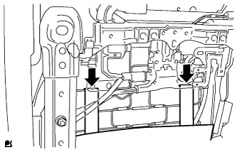 |
Attach the rubber band at the bottom of the separate type front seatback cover with pad.
| 16. Install Power Seat Switch Knob (for Slide & Vertical) |
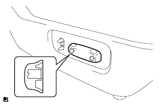 |
Engage the 2 claws to install the power seat switch knob (for slide & vertical).
| 17. Install Power Seat Switch Knob (for Reclining) |
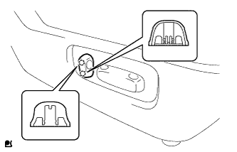 |
Engage the 2 claws to install the power seat switch knob (for reclining).